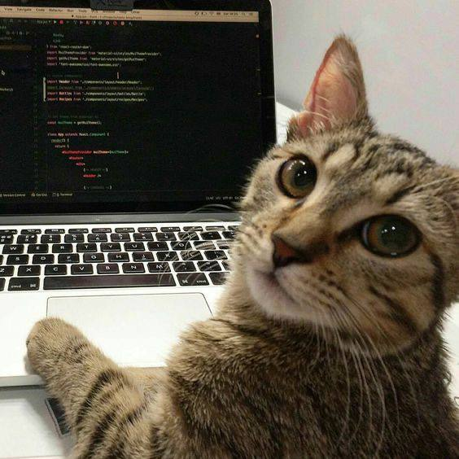

Хеш-структуры · модуль 18 · счётчики и группировка
Глава 18.5
Практика
и домашнее задание
Работа на паре по стартовому набору lesson_18: пять функций и 49 тестов. Затем домашнее задание и порядок сдачи.
§1Стартовый набор
В архиве всё, что нужно для работы на паре и дома. Функции в solution.py пустые: в каждой стоит raise NotImplementedError, поэтому до начала работы все 49 тестов падают. Обе версии каждой задачи проверяются одними и теми же тестами. Это граничные входы из глав 18.1–18.4, сравнение с перебором или с Counter на случайных входах и длинные входы.
§2Порядок работы на паре
По КТП занятие 18 — отработка приёма на задачах. Задачи 1 и 2 решаются в формате собеседования: 40 минут на обе, без ИИ и поиска. Работа идёт в папке lesson_18 на своём компьютере, нужен Python с pytest. Если Python ещё не настроен, начните с песочниц в главах 18.2–18.4: там те же функции пишутся прямо на странице. Сдать всё равно нужно solution.py с зелёным pytest.
- Скопируйте папку
lesson_18вportfolio/lesson_18/личного репозитория и выполнитеpython -m pytest tests.py -v. Все 49 тестов должны упасть: так проверяется, что pytest нашёл файлы и запустил тесты. - До кода откройте
initial_attempt.txt. Запишите вопросы к условиям задач 1 и 2, перебор с его сложностью и примеры с ответами: пустой список, повтор слова, пустое слово, буква ё, равные частоты на границе k, k больше числа разных. Образец вопросов — глава 18.1, §4. - Засеките 40 минут. Напишите
group_anagramsиgroup_anagrams_counts. Проверка:python -m pytest tests.py -k group. - Напишите
top_k_frequentиtop_k_bucket:-k top. Если тест падает, найдите симптом в сводке главы 18.4, §2. - Запустите замер:
python bench.py > bench_results.txt. Он идёт около 5 секунд. Заполнитеcomplexity_note.mdи объясните решение соседу по схеме из главы 18.4, §4: сравнение двух ключей — часть контроля занятия. - Если осталось время —
frequency_sort, символы по убыванию частоты:-k frequency. Это та же сортировка частот, только ответ собирается в строку. - Если и это готово —
extra.py: счастливое число, сортировка по возрастанию частоты, общие слова с одним вхождением. Проверка:python -m pytest tests_extra.py -v.
§3Домашнее задание
Максим Николаевич не хочет задавать домашнее задание. Но очень хочет

| Задача | Что сделать | Где помогут |
|---|---|---|
| 1 · Довести решения | solution.py проходит все 49 тестов. bench_results.txt — ваш замер. complexity_note.md заполнен: ключ группировки и сравнение двух ключей, две фазы, стабильность, время, память и таблицы замера. | Главы 18.2–18.4 |
| 2 · Три ошибки на границе | В bugs_18.py функции most_frequent_letter, group_by_length, count_top_ties. Каждая верно отвечает на обычных входах и ошибается на граничном. Для каждой: вход, на котором ответ неверный; падающий тест в tests_bugs_18.py; исправление; повторный прогон. Вывод pytest — в bugs_run.txt. | Глава 18.4: граничные входы и сводка ошибок |
| 3 · k самых частых слов | Функция top_k_words(words, k), LeetCode 692. Вернуть k самых частых слов по убыванию частоты, при равной частоте — по алфавиту. Пример: ['i', 'love', 'leetcode', 'i', 'love', 'coding'], k = 2 → ['i', 'love']; ['кот', 'дом', 'кот', 'дом', 'ёж'], k = 1 → ['дом']. Время O(n + d log d). Не меньше шести своих тестов: пустой список, k больше числа разных, равные частоты на границе k, буква ё, слова, которые различаются только регистром. | Глава 18.3, §5: сортировка по двум ключам |
Тест к bugs_18.py засчитывается, если до исправления он падает, а после — проходит. Тест, который проходит и на ошибочной версии, ошибку не находит.
Задача 3 отличается от задачи 2 одним правилом: при равной частоте слова идут по алфавиту. Ключ сортировки, который в главе 18.3 был ошибкой, здесь становится верным: условие требует другой порядок. Буква ё в Python стоит после я, а заглавные буквы — раньше строчных, поэтому тесты с ними показывают, что сравнивает ваш ключ.
§4Порядок сдачи
| Файлы | portfolio/lesson_18/: solution.py, tests.py, bench_results.txt, complexity_note.md, initial_attempt.txt, bugs_18.py, tests_bugs_18.py, bugs_run.txt |
|---|---|
| Ветка и PR | Ветка hw-18, коммиты с содержательными сообщениями, Pull Request в собственную main. Объяснение решения проверяется по схеме из главы 18.4, §4 |
| Срок | До начала занятия 19 |
| Проверяем | Зелёный pytest по всем файлам; три теста к bugs_18.py, которые падают до исправления; шесть тестов к top_k_words; заметка без пустых пунктов |
| ИИ | Код и тесты пишете сами: на контроле занятия вы сравниваете два ключа группировки и объясняете стабильность своими словами. Оформление .md и редактуру формулировок можно поручить модели. Я сам так делаю всегда, поэтому и вам запрещать не буду. |
Перед занятием 19 задачи модуля можно прорешать в формате собеседования — глава 18.6.